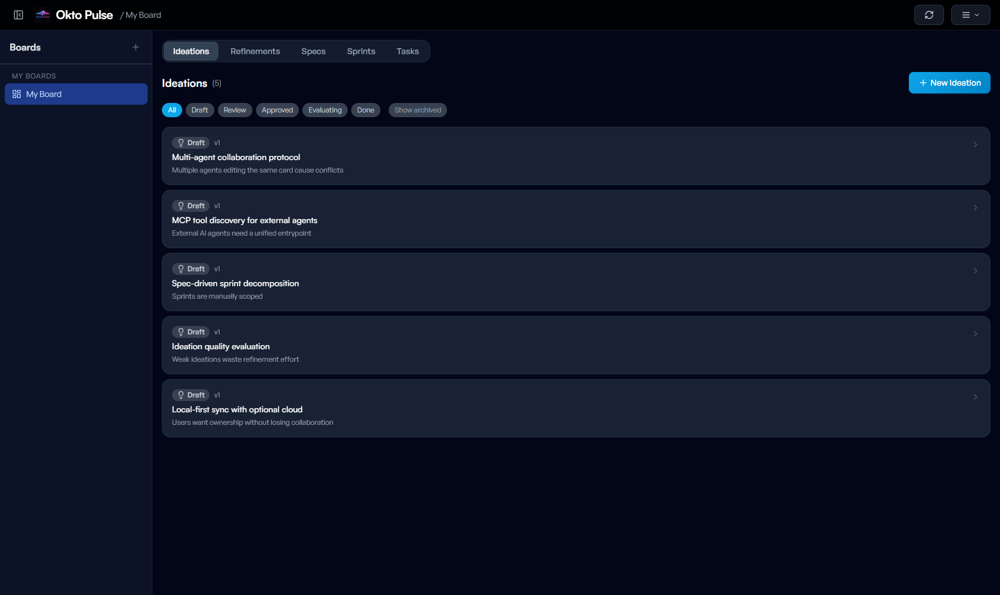
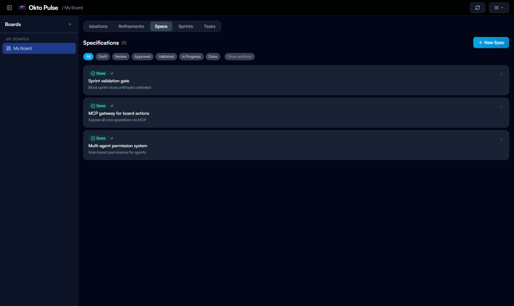
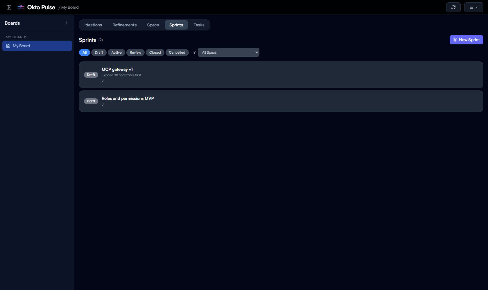

Intent is specified
Humans (and agents in upstream roles) define problem, scope, acceptance criteria. No code without spec.
A local-first kanban board with native MCP support. Okto Pulse is where humans and AI agents plan, refine, and ship together — on the same board, with distinct roles and zero collisions.
pip install okto-pulse
ADLC is what the SDLC becomes once AI agents are first-class participants, not helpers on the side. Humans set intent, agents execute against spec, validators gate the result — and every artefact is traceable end to end. Okto Pulse is the first spec-driven platform built from the ground up for this cycle.
Humans (and agents in upstream roles) define problem, scope, acceptance criteria. No code without spec.
Executor agents pick tasks linked to specs. MCP exposes the board so any agent can act — with its role permissions enforced.
Validator agents (or humans) gate the output against the original spec. Nothing ships without passing its gate.
Task → sprint → spec → refinement → ideation. Every artefact linked, every decision auditable.
Okto Pulse enforces a deliberate flow. Each stage has its own artefacts, its own review gate, and its own agent permissions — so nothing jumps from whim to production without passing through refinement and spec.
Raw ideas, problem statements, proposed approaches. Evaluated before promotion.
Scope, decisions, constraints. Context compiled from the ideation and Q&A.
Requirements, acceptance criteria, test scenarios, business rules, contracts.
A spec sliced into a shippable iteration. Objective, tasks, validation gate.
A kanban card linked to its spec. Moves through the board until validated.
Opinionated where opinion matters, flexible where it doesn't. Okto Pulse ships with the primitives you'd build anyway — pipeline gates, role-based permissions, MCP tools, analytics — so you can focus on the work.
Every task is traceable back to a spec. Specs derive from refinements. Refinements from ideations. No orphan work.
Five built-in agent presets — Executor, Validator, QA, Spec, Full Control — with surgical permission grids.
150+ tools over Model Context Protocol. Plug Claude, Cursor, Windsurf, or any MCP-aware agent directly into your board.
SQLite under the hood. Your data is a file on your machine. Cloud sync is optional, never required.
Tasks in a board, specs in a list, sprints in a queue. Everything cross-links so context is never more than one click away.
pip install okto-pulse. One port for the app, one for MCP. No Docker, no accounts, no friction.
Okto Pulse ships with five built-in permission presets that give each agent on a board a distinct area of responsibility. They work in parallel without stepping on each other — and they are built-in, not something you configure yourself.
Implements normal cards. Moves tickets not_started → validation. Cannot submit validations or promote to done.
Defines the pipeline upstream. Owns ideation, refinement, and spec content. Composes sprint plans and opens the specification.
Exclusive gate holder. Submits spec, task, and sprint validations and evaluations. Touches cards only to attach validation results.
Owns test scenarios and the test-card lifecycle. Writes regressions, runs them, and reports. Does not submit validation gates itself.
Unrestricted access. Intended for a trusted orchestrator agent or for the human owner who bootstraps the board before delegating.
Clone any built-in preset as a starting point — or compose your own permission grid across boards, specs, sprints, cards, validations, and analytics.
The pipeline lives in the same application as the kanban board. You switch tabs, not tools.



Every artefact in the pipeline is instrumented. Okto Pulse surfaces a conversion funnel, weekly velocity, validation gate throughput, sprint evaluations, and drift against the original spec — on the same screen, for every board.


Ideations → Refinements → Specs → Tasks → Done. Track what you started versus what you shipped, with overall completion percentage.
Four tracked gates — spec, task, spec evaluation, sprint evaluation — each with its own submission count and pass/fail trend.
Weekly throughput split by implementation, tests, and bugs. Average drift surfaces when specs start to deviate from their original shape.
Every KPI card is clickable. Drill into a spec or sprint for a deeper view, or export the raw numbers as CSV for your own tooling.
As projects move through the ADLC, Okto Pulse consolidates ideations, refinements, specs, tasks, and bugs into a living knowledge graph. Every shipped decision becomes reusable context for future dashboards, discovery, and the next round of ideation.

Ideations, refinements, specs, tasks, and bugs become typed nodes with provenance.
Decisions, requirements, constraints, tests, and implementation signals stay linked.
Analytics gains a reusable knowledge base for discovery, drift, and future planning.
New initiatives inherit what the project already learned, reducing repeated context work.
Okto Pulse ships its own MCP server. Point Claude Code, Cursor, Windsurf, or a custom orchestrator at it, and the agent gets the full board API — 150+ tools spanning ideations, refinements, specs, sprints, cards, validations, analytics, and agents themselves.
{
"mcpServers": {
"okto-pulse": {
"url": "http://127.0.0.1:8101/mcp?api_key=dash_xxx"
}
}
}okto_pulse_list_my_boardsokto_pulse_create_ideationokto_pulse_derive_spec_from_refinementokto_pulse_create_sprintokto_pulse_assign_tasks_to_sprintokto_pulse_submit_spec_validationokto_pulse_submit_task_validationokto_pulse_ask_spec_questionokto_pulse_add_test_scenariookto_pulse_get_analyticsokto_pulse_link_task_to_contractokto_pulse_list_board_members… and roughly 140 more.
pip install okto-pulse
okto-pulse init
okto-pulse --api-port 8100 --mcp-port 8101 serve
Okto Pulse generates the config on first init. Drop it next to your agent and the board is wired up.
Free to use · Source-available under Elastic License 2.0